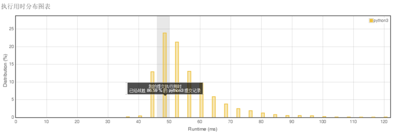
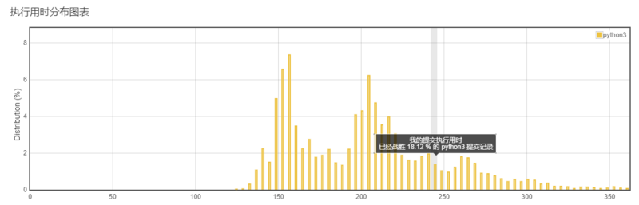
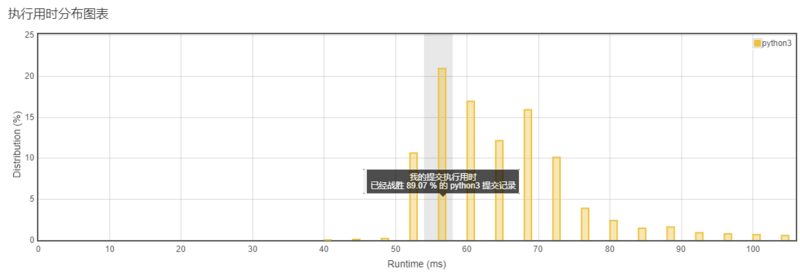

<!DOCTYPE html>
<html>
<head><meta name="generator" content="Hexo 3.8.0">
  <meta charset="utf-8">
  
  <title>Aloha | Gaga酱的奇思妙想</title>
  <meta name="viewport" content="width=device-width, initial-scale=1, maximum-scale=1">
  
    <meta name="keywords" content="萌萌の嘎嘎">
  
  
  
  
  <meta name="description" content="温故而知新~">
<meta name="keywords" content="leetcode,python">
<meta property="og:type" content="article">
<meta property="og:title" content="小李飞刀：刷题第四弹！">
<meta property="og:url" content="http://yoursite.com/2019/02/01/小李飞刀：刷题第四弹！/index.html">
<meta property="og:site_name" content="Gaga酱の奇思妙想">
<meta property="og:description" content="温故而知新~">
<meta property="og:locale" content="zh-Hans">
<meta property="og:image" content="http://yoursite.com/2019/02/01/小李飞刀：刷题第四弹！/1.png">
<meta property="og:image" content="http://yoursite.com/2019/02/01/小李飞刀：刷题第四弹！/2.png">
<meta property="og:image" content="http://yoursite.com/2019/02/01/小李飞刀：刷题第四弹！/3.png">
<meta property="og:updated_time" content="2019-09-24T15:20:41.513Z">
<meta name="twitter:card" content="summary">
<meta name="twitter:title" content="小李飞刀：刷题第四弹！">
<meta name="twitter:description" content="温故而知新~">
<meta name="twitter:image" content="http://yoursite.com/2019/02/01/小李飞刀：刷题第四弹！/1.png">
  
  <link rel="icon" href="/css/images/favicon.png">
  
    <link href="//fonts.googleapis.com/css?family=Source+Code+Pro" rel="stylesheet" type="text/css">
  
  <link href="https://fonts.googleapis.com/css?family=Open+Sans|Montserrat:700" rel="stylesheet" type="text/css">
  <link href="https://fonts.googleapis.com/css?family=Roboto:400,300,300italic,400italic" rel="stylesheet" type="text/css">
  <link href="//cdn.bootcss.com/font-awesome/4.6.3/css/font-awesome.min.css" rel="stylesheet">
  <style type="text/css">
    @font-face{font-family:futura-pt;src:url(https://use.typekit.net/af/9749f0/00000000000000000001008f/27/l?subset_id=2&fvd=n5) format("woff2");font-weight:500;font-style:normal;}
    @font-face{font-family:futura-pt;src:url(https://use.typekit.net/af/90cf9f/000000000000000000010091/27/l?subset_id=2&fvd=n7) format("woff2");font-weight:500;font-style:normal;}
    @font-face{font-family:futura-pt;src:url(https://use.typekit.net/af/8a5494/000000000000000000013365/27/l?subset_id=2&fvd=n4) format("woff2");font-weight:lighter;font-style:normal;}
    @font-face{font-family:futura-pt;src:url(https://use.typekit.net/af/d337d8/000000000000000000010095/27/l?subset_id=2&fvd=i4) format("woff2");font-weight:400;font-style:italic;}</style>
    
  <link rel="stylesheet" id="athemes-headings-fonts-css" href="//fonts.googleapis.com/css?family=Yanone+Kaffeesatz%3A200%2C300%2C400%2C700&amp;ver=4.6.1" type="text/css" media="all">

  <link rel="stylesheet" id="athemes-headings-fonts-css" href="//fonts.googleapis.com/css?family=Oswald%3A300%2C400%2C700&amp;ver=4.6.1" type="text/css" media="all">
  <link rel="stylesheet" href="/css/style.css">

  <script src="/js/jquery-3.1.1.min.js"></script>

  <!-- Bootstrap core CSS -->
  <link rel="stylesheet" href="/css/bootstrap.css">
  <link rel="stylesheet" href="/css/fashion.css">
  <link rel="stylesheet" href="/css/glyphs.css">
  <!-- Global site tag (gtag.js) - Google Analytics -->
  <script async src="https://www.googletagmanager.com/gtag/js?id=UA-142486934-1"></script>
  <script>
    window.dataLayer = window.dataLayer || [];
    function gtag(){dataLayer.push(arguments);}
    gtag('js', new Date());

    gtag('config', 'UA-142486934-1');
  </script>


</head>
</html>


  <body data-spy="scroll" data-target="#toc" data-offset="50">


  


<header id="allheader" class="site-header" role="banner">
  <div class="clearfix container">
      <div class="site-branding">

          <h3 class="site-title">
            
              <a href="/" title="Gaga酱の奇思妙想" rel="home"> Gaga酱の奇思妙想 </a>
            
          </h3>
          
          
            <div class="site-description">深水静流</div>
          
            
          <nav id="main-navigation" class="main-navigation" role="navigation">
            <a class="nav-open">Menu</a>
            <a class="nav-close">Close</a>

            <div class="clearfix sf-menu">
              <ul id="main-nav" class="menu sf-js-enabled sf-arrows" style="touch-action: pan-y;">
                    
                      <li class="menu-item menu-item-type-custom menu-item-object-custom menu-item-home menu-item-1663"> <a class href="/">冲鸭❤</a> </li>
                    
                      <li class="menu-item menu-item-type-custom menu-item-object-custom menu-item-home menu-item-1663"> <a class href="/archives">archives❤</a> </li>
                    
                      <li class="menu-item menu-item-type-custom menu-item-object-custom menu-item-home menu-item-1663"> <a class href="/categories">碎碎念的基本法❤</a> </li>
                    
                      <li class="menu-item menu-item-type-custom menu-item-object-custom menu-item-home menu-item-1663"> <a class href="/tags">tags❤</a> </li>
                    
                      <li class="menu-item menu-item-type-custom menu-item-object-custom menu-item-home menu-item-1663"> <a class href="/about">岁月如歌❤</a> </li>
                    
                      <li class="menu-item menu-item-type-custom menu-item-object-custom menu-item-home menu-item-1663"> <a class href="/books">阅❤</a> </li>
                    
                      <li class="menu-item menu-item-type-custom menu-item-object-custom menu-item-home menu-item-1663"> <a class href="/movies">影❤</a> </li>
                    
              </ul>
            </div>
          </nav>

      </div>
  </div>
</header>


  <div id="container">
    <div id="wrap">
            
      <div id="content" class="outer">
        
          <section id="main" style="float:none;"><article id="post-小李飞刀：刷题第四弹！" style="width: 66%; float:left;" class="article article-type-post" itemscope itemprop="blogPost">
  <div id="articleInner" class="clearfix post-1016 post type-post status-publish format-standard has-post-thumbnail hentry category-template-2 category-uncategorized tag-codex tag-edge-case tag-featured-image tag-image tag-template">
    
    
      <header class="article-header">
        
  
    <h1 class="thumb" itemprop="name">
      小李飞刀：刷题第四弹！
    </h1>
  

      </header>
    
    <div class="article-meta">
      
	<a href="/2019/02/01/小李飞刀：刷题第四弹！/" class="article-date">
	  <time datetime="2019-02-01T14:04:37.000Z" itemprop="datePublished">February 1, 2019</time>
	</a>

      
	<span class="ico-folder"></span>
    <a class="article-category-link" href="/categories/小李の放学后/">小李の放学后</a>
 
      
    </div>
    <div class="article-entry" itemprop="articleBody">
      
        <p></p>
<h4 id="随便说点啥"><a href="#随便说点啥" class="headerlink" title="随便说点啥"></a>随便说点啥</h4><p>昨晚其实刷了题来着，但是没有解出来，哭泣！</p>
<p>但是，今天重新写了下，解出来咯~</p>
<p>所以今天的题量要增加咯~</p>
<p>我会加油的！</p>
<h4 id="第一题"><a href="#第一题" class="headerlink" title="第一题"></a>第一题</h4><p><strong>14. 最长公共前缀</strong><br><strong>难度：简单</strong><br>编写一个函数来查找字符串数组中的最长公共前缀。<br>如果不存在公共前缀，返回空字符串 “”。</p>
<p><strong>我的解题代码如下：</strong><br><figure class="highlight applescript"><table><tr><td class="code"><pre><span class="line"><span class="built_in">class</span> Solution:</span><br><span class="line">    def longestCommonPrefix(self, strs):</span><br><span class="line">        <span class="string">""</span><span class="string">"</span></span><br><span class="line"><span class="string">        :type strs: List[str]</span></span><br><span class="line"><span class="string">        :rtype: str</span></span><br><span class="line"><span class="string">        "</span><span class="string">""</span></span><br><span class="line">        <span class="built_in">length</span> = len(strs)</span><br><span class="line">        <span class="literal">result</span> = <span class="string">""</span></span><br><span class="line">        <span class="keyword">if</span> <span class="built_in">length</span> &lt; <span class="number">1</span>:<span class="comment">#如果空就不需要比较</span></span><br><span class="line"><span class="built_in">            return</span> <span class="literal">result</span></span><br><span class="line">        <span class="keyword">if</span> <span class="built_in">length</span> &lt; <span class="number">2</span>:</span><br><span class="line">            <span class="literal">result</span> = strs[<span class="number">0</span>]</span><br><span class="line"><span class="built_in">            return</span> <span class="literal">result</span></span><br><span class="line">        <span class="comment">#找到最短词，避免越界</span></span><br><span class="line">        l = len(strs[<span class="number">0</span>])</span><br><span class="line">        <span class="keyword">for</span> i <span class="keyword">in</span> strs[<span class="number">1</span>:]:</span><br><span class="line">            <span class="keyword">if</span> l &gt; len(i):</span><br><span class="line">                l = len(i)<span class="comment">#最小的循环次数</span></span><br><span class="line">        <span class="keyword">for</span> j <span class="keyword">in</span> range(l):<span class="comment">#循环二维 strs[a][j]</span></span><br><span class="line">            <span class="keyword">for</span> a <span class="keyword">in</span> range(<span class="number">1</span>,<span class="built_in">length</span>):</span><br><span class="line">                <span class="keyword">if</span> strs[<span class="number">0</span>][j] == strs[a][j]:<span class="comment">#始终按第一个数组来做比对</span></span><br><span class="line">                    <span class="keyword">if</span> a == <span class="built_in">length</span> - <span class="number">1</span>:<span class="comment">#数组最后一位</span></span><br><span class="line">                        <span class="literal">result</span> = <span class="literal">result</span> + strs[<span class="number">0</span>][j]</span><br><span class="line">                <span class="keyword">else</span>:</span><br><span class="line"><span class="built_in">                    return</span> <span class="literal">result</span></span><br><span class="line"><span class="built_in">        return</span> <span class="literal">result</span></span><br></pre></td></tr></table></figure></p>
<p><br>因为是第二遍写了，所以加了很多奇怪的注释，但是思路清晰很多。<br>注释还是很重要的~</p>
<p><strong>我的主要思路是：</strong></p>
<ul>
<li>判断数据量是否需要继续循环判断，数组长度为0和为1情况下结果不同。（为1的时候要返回数组本身….因为这个所以执行错误一次）</li>
<li>当需要循环判断的时候，始终拿<code>strs[0][j]</code>就是数组第一项的每一个字母来做比较。</li>
<li>双重循环来判断，一层是判断数组每个数，一层是判断是否有项目超出字母数量。</li>
</ul>
<p><strong>总结：</strong><br>双重循环的效率还是比较低的，可以再考虑优化下，看下官方题解的方式。</p>
<h4 id="第二题"><a href="#第二题" class="headerlink" title="第二题"></a>第二题</h4><p><strong>13. 罗马数字转整数</strong><br><strong>难度：简单</strong><br>罗马数字包含以下七种字符: I， V， X， L，C，D 和 M。<br>字符          数值<br>I             1<br>V             5<br>X             10<br>L             50<br>C             100<br>D             500<br>M             1000</p>
<p>例如， 罗马数字 2 写做 II ，即为两个并列的 1。12 写做 XII ，即为 X + II 。 27 写做  XXVII, 即为 XX + V + II 。<br>通常情况下，罗马数字中小的数字在大的数字的右边。但也存在特例，例如 4 不写做 IIII，而是 IV。数字 1 在数字 5 的左边，所表示的数等于大数 5 减小数 1 得到的数值 4 。同样地，数字 9 表示为 IX。这个特殊的规则只适用于以下六种情况：</p>
<p>I 可以放在 V (5) 和 X (10) 的左边，来表示 4 和 9。<br>X 可以放在 L (50) 和 C (100) 的左边，来表示 40 和 90。<br>C 可以放在 D (500) 和 M (1000) 的左边，来表示 400 和 900。<br>给定一个罗马数字，将其转换成整数。输入确保在 1 到 3999 的范围内。</p>
<p><strong>我的解题代码如下：</strong><br><figure class="highlight python"><table><tr><td class="code"><pre><span class="line"><span class="class"><span class="keyword">class</span> <span class="title">Solution</span>:</span></span><br><span class="line">    <span class="function"><span class="keyword">def</span> <span class="title">romanToInt</span><span class="params">(self, s)</span>:</span></span><br><span class="line">        <span class="string">"""</span></span><br><span class="line"><span class="string">        :type s: str</span></span><br><span class="line"><span class="string">        :rtype: int</span></span><br><span class="line"><span class="string">        """</span></span><br><span class="line">        result = <span class="number">0</span></span><br><span class="line">        dic = &#123;<span class="string">'I'</span>:<span class="number">1</span>,<span class="string">'V'</span>:<span class="number">5</span>,<span class="string">'X'</span>:<span class="number">10</span>,<span class="string">'L'</span>:<span class="number">50</span>,<span class="string">'C'</span>:<span class="number">100</span>,<span class="string">'D'</span>:<span class="number">500</span>,<span class="string">'M'</span>:<span class="number">1000</span>,<span class="string">'IV'</span>:<span class="number">4</span>,<span class="string">'IX'</span>:<span class="number">9</span>,<span class="string">'XL'</span>:<span class="number">40</span>,<span class="string">'XC'</span>:<span class="number">90</span>,<span class="string">'CD'</span>:<span class="number">400</span>,<span class="string">'CM'</span>:<span class="number">900</span>&#125;</span><br><span class="line">        <span class="keyword">if</span> len(s) &lt; <span class="number">2</span>:</span><br><span class="line">            result = dic[s[<span class="number">0</span>]]</span><br><span class="line">            <span class="keyword">return</span> result</span><br><span class="line">        length = len(s)</span><br><span class="line">        l = <span class="number">0</span></span><br><span class="line">        <span class="keyword">while</span> l &lt; length:</span><br><span class="line">            point = s[l]</span><br><span class="line">            <span class="keyword">if</span> l + <span class="number">1</span> == length:</span><br><span class="line">                l = l + <span class="number">1</span></span><br><span class="line">            <span class="keyword">elif</span> point == <span class="string">'I'</span> <span class="keyword">and</span> (s[l+<span class="number">1</span>] == <span class="string">'V'</span> <span class="keyword">or</span> s[l+<span class="number">1</span>] == <span class="string">'X'</span>):</span><br><span class="line">                point = point + s[l+<span class="number">1</span>]</span><br><span class="line">                l = l + <span class="number">2</span></span><br><span class="line">            <span class="keyword">elif</span> point == <span class="string">'X'</span> <span class="keyword">and</span> (s[l+<span class="number">1</span>] == <span class="string">'L'</span> <span class="keyword">or</span> s[l+<span class="number">1</span>] == <span class="string">'C'</span>):</span><br><span class="line">                point = point + s[l+<span class="number">1</span>]</span><br><span class="line">                l = l + <span class="number">2</span></span><br><span class="line">            <span class="keyword">elif</span> point == <span class="string">'C'</span> <span class="keyword">and</span> (s[l+<span class="number">1</span>] == <span class="string">'D'</span> <span class="keyword">or</span> s[l+<span class="number">1</span>] == <span class="string">'M'</span>):</span><br><span class="line">                point = point + s[l+<span class="number">1</span>]</span><br><span class="line">                l = l + <span class="number">2</span></span><br><span class="line">            <span class="keyword">else</span>:</span><br><span class="line">                l = l + <span class="number">1</span></span><br><span class="line">            result = result + dic[point]</span><br><span class="line">        <span class="keyword">return</span> result</span><br></pre></td></tr></table></figure></p>
<p><br>执行效率上属于偏慢的那一拨。<br><strong>我的主要思路是：</strong></p>
<ul>
<li>用字典来映射字母对应的数字，包括需要特殊对待的朋友们</li>
<li>当遇到特殊字符的时候做特殊判断<br><strong>总结：</strong></li>
<li>看了佳扬的思路后茅塞顿开，其实对于特殊字符可以简单的判断，他们对应数字的大小。这样就简化判断为比大小，而不是多重对比字符内容。</li>
<li>字典用来做映射还是比较快，还是要多研究下它的用法。<br>##第三题##<br><strong>21. 合并两个有序链表</strong><br><strong>难度：简单</strong><br>将两个有序链表合并为一个新的有序链表并返回。新链表是通过拼接给定的两个链表的所有节点组成的。 </li>
</ul>
<p><strong>我的解题代码如下：</strong><br><figure class="highlight python"><table><tr><td class="code"><pre><span class="line"><span class="comment"># Definition for singly-linked list.</span></span><br><span class="line"><span class="comment"># class ListNode:</span></span><br><span class="line"><span class="comment">#     def __init__(self, x):</span></span><br><span class="line"><span class="comment">#         self.val = x</span></span><br><span class="line"><span class="comment">#         self.next = None</span></span><br><span class="line"></span><br><span class="line"><span class="class"><span class="keyword">class</span> <span class="title">Solution</span>:</span></span><br><span class="line">    <span class="function"><span class="keyword">def</span> <span class="title">mergeTwoLists</span><span class="params">(self, l1, l2)</span>:</span></span><br><span class="line">        <span class="string">"""</span></span><br><span class="line"><span class="string">        :type l1: ListNode</span></span><br><span class="line"><span class="string">        :type l2: ListNode</span></span><br><span class="line"><span class="string">        :rtype: ListNode</span></span><br><span class="line"><span class="string">        """</span></span><br><span class="line">        r = ListNode(<span class="number">0</span>)<span class="comment">#游标</span></span><br><span class="line">        result = r</span><br><span class="line">        <span class="keyword">while</span> <span class="number">1</span>:</span><br><span class="line">            <span class="keyword">if</span> l1 <span class="keyword">is</span> <span class="literal">None</span> <span class="keyword">and</span> l2 <span class="keyword">is</span> <span class="literal">None</span>:</span><br><span class="line">                <span class="keyword">return</span> <span class="literal">None</span></span><br><span class="line">            <span class="keyword">elif</span> l1 <span class="keyword">is</span> <span class="literal">None</span>:</span><br><span class="line">                <span class="keyword">return</span> l2</span><br><span class="line">            <span class="keyword">elif</span> l2 <span class="keyword">is</span> <span class="literal">None</span>:</span><br><span class="line">                <span class="keyword">return</span> l1</span><br><span class="line">            <span class="keyword">elif</span> l1.val &lt; l2.val:</span><br><span class="line">                r.val = l1.val</span><br><span class="line">                l1 = l1.next</span><br><span class="line">                <span class="keyword">if</span> l1 <span class="keyword">is</span> <span class="literal">None</span>:</span><br><span class="line">                    r.next = l2</span><br><span class="line">                    <span class="keyword">break</span></span><br><span class="line">                r.next = ListNode(<span class="number">0</span>)</span><br><span class="line">                r = r.next</span><br><span class="line">            <span class="keyword">else</span>:</span><br><span class="line">                r.val = l2.val</span><br><span class="line">                l2 = l2.next</span><br><span class="line">                <span class="keyword">if</span> l2 <span class="keyword">is</span> <span class="literal">None</span>:</span><br><span class="line">                    r.next = l1</span><br><span class="line">                    <span class="keyword">break</span></span><br><span class="line">                r.next = ListNode(<span class="number">0</span>)</span><br><span class="line">                r = r.next</span><br><span class="line">        <span class="keyword">return</span> result</span><br></pre></td></tr></table></figure></p>
<p><br>这次的执行效率算是比较大众的一个效率。</p>
<p><strong>我的主要思路是：</strong></p>
<ul>
<li>对比两个链表节点的值，首先取小的值，才会有序。</li>
<li>判断每次的l1和l2是否有next，当其中一个不存在的时候，就可以直接连接另一条链表了。<br><strong>总结：</strong></li>
<li>链表的结构第一次接触。本题主要是熟悉了下对当前节点部署下一节点的方法。主要方式为将游标指向下一节点即可。每次都对节点进行操作。</li>
<li>链表的形式还有多种，包括对其的增删改查，都需要再熟悉。</li>
</ul>
      
    </div>
    <footer class="entry-meta entry-footer">
      
	<span class="ico-folder"></span>
    <a class="article-category-link" href="/categories/小李の放学后/">小李の放学后</a>

      
  <span class="ico-tags"></span>
  <ul class="article-tag-list"><li class="article-tag-list-item"><a class="article-tag-list-link" href="/tags/leetcode/">leetcode</a></li><li class="article-tag-list-item"><a class="article-tag-list-link" href="/tags/python/">python</a></li></ul>

      
        
	<div id="comment">
	
	<!-- 多说评论框 start -->
	 <div class="ds-thread" data-thread-key="/2019/02/01/小李飞刀：刷题第四弹！/" data-title="小李飞刀：刷题第四弹！" data-url="http://yoursite.com/2019/02/01/小李飞刀：刷题第四弹！/"></div>
	<!-- 多说评论框 end -->
	<!-- 多说公共JS代码 start (一个网页只需插入一次) -->
	<script type="text/javascript">
	var duoshuoQuery = {short_name:"iTimeTraveler"};
	  (function() {
	    var ds = document.createElement('script');
	    ds.type = 'text/javascript';ds.async = true;
	    ds.src = (document.location.protocol == 'https:' ? 'https:' : 'http:') + '//static.duoshuo.com/embed.js';
	    ds.charset = 'UTF-8';
	    (document.getElementsByTagName('head')[0] 
	     || document.getElementsByTagName('body')[0]).appendChild(ds);
	  })();
	  </script>
	<!-- 多说公共JS代码 end -->
	
	</div>
	<link rel="stylesheet" href="/css/comment.css">


      
    </footer>
    <hr class="entry-footer-hr">
  </div>
  
    
<nav id="article-nav">
  
    <a href="/2019/02/02/小李飞刀：leetcode我又来啦/" id="article-nav-newer" class="article-nav-link-wrap">
      <strong class="article-nav-caption">Newer</strong>
      <div class="article-nav-title">
        
          小李飞刀：leetcode我又来啦~
        
      </div>
    </a>
  
  
    <a href="/2019/01/30/小李飞刀：刷题第三弹！/" id="article-nav-older" class="article-nav-link-wrap">
      <strong class="article-nav-caption">Older</strong>
      <div class="article-nav-title">小李飞刀：刷题第三弹！</div>
    </a>
  
</nav>

  
</article>


<!-- Table of Contents -->

  <aside id="sidebar">
    <div id="toc" class="toc-article">
    <strong class="toc-title">Contents</strong>
    
      <ol class="nav"><li class="nav-item nav-level-4"><a class="nav-link" href="#随便说点啥"><span class="nav-number">1.</span> <span class="nav-text">随便说点啥</span></a></li><li class="nav-item nav-level-4"><a class="nav-link" href="#第一题"><span class="nav-number">2.</span> <span class="nav-text">第一题</span></a></li><li class="nav-item nav-level-4"><a class="nav-link" href="#第二题"><span class="nav-number">3.</span> <span class="nav-text">第二题</span></a></li></ol>
    
    </div>
  </aside>


</section>
        
      </div>

    </div>
    <!-- <nav id="mobile-nav">
  
    <a href="/" class="mobile-nav-link">冲鸭❤</a>
  
    <a href="/archives" class="mobile-nav-link">archives❤</a>
  
    <a href="/categories" class="mobile-nav-link">碎碎念的基本法❤</a>
  
    <a href="/tags" class="mobile-nav-link">Tags❤</a>
  
    <a href="/about" class="mobile-nav-link">岁月如歌❤</a>
  
    <a href="/books" class="mobile-nav-link">阅❤</a>
  
    <a href="/movies" class="mobile-nav-link">影❤</a>
  
</nav> -->
    <footer id="footer" class="site-footer">
  

  <div class="clearfix container">
      <div class="site-info">
	      &copy; 2022 Gaga酱の奇思妙想 All Rights Reserved.
        
      </div>
      <div class="site-credit">
        Theme by <a href="https://github.com/iTimeTraveler/hexo-theme-hipaper" target="_blank">hipaper</a>
      </div>
  </div>
</footer>


<!-- min height -->

<script>
    var wrapdiv = document.getElementById("wrap");
    var contentdiv = document.getElementById("content");

    wrapdiv.style.minHeight = document.body.offsetHeight - document.getElementById("allheader").offsetHeight - document.getElementById("footer").offsetHeight + "px";
    contentdiv.style.minHeight = document.body.offsetHeight - document.getElementById("allheader").offsetHeight - document.getElementById("footer").offsetHeight + "px";


    <!-- headerblur min height -->
    
    
</script>
    
<div style="display: none;">
  <script src="https://s11.cnzz.com/z_stat.php?id=1260716016&web_id=1260716016" language="JavaScript"></script>
</div>

<!-- mathjax config similar to math.stackexchange -->

<script type="text/x-mathjax-config">
  MathJax.Hub.Config({
    tex2jax: {
      inlineMath: [ ['$','$'], ["\\(","\\)"] ],
      processEscapes: true
    }
  });
</script>

<script type="text/x-mathjax-config">
    MathJax.Hub.Config({
      tex2jax: {
        skipTags: ['script', 'noscript', 'style', 'textarea', 'pre', 'code']
      }
    });
</script>

<script type="text/x-mathjax-config">
    MathJax.Hub.Queue(function() {
        var all = MathJax.Hub.getAllJax(), i;
        for(i=0; i < all.length; i += 1) {
            all[i].SourceElement().parentNode.className += ' has-jax';
        }
    });
</script>

<script type="text/javascript" src="https://cdn.mathjax.org/mathjax/latest/MathJax.js?config=TeX-AMS-MML_HTMLorMML">
</script>


  <link rel="stylesheet" href="/fancybox/jquery.fancybox.css">
  <script src="/fancybox/jquery.fancybox.pack.js"></script>


<script src="/js/script.js"></script>
<script src="/js/bootstrap.js"></script>
<script src="/js/main.js"></script>


  <script type="text/javascript" src="js/love.js"></script>
  <script type="text/javascript" src="js/float.js"></script>
  <script type="text/javascript" src="js/typewriter.js"></script>
  <script type="text/javascript" color="0,104,183" opacity="1" zindex="-1" count="50" src="js/particle.js"></script>
  </div>

  <a id="rocket" href="#top" class=""></a>
  <script type="text/javascript" src="/js/totop.js" async=""></script>
</body>
</html>
